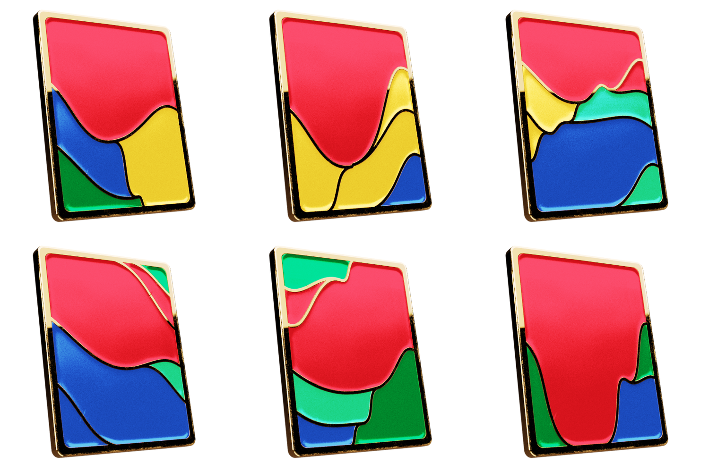
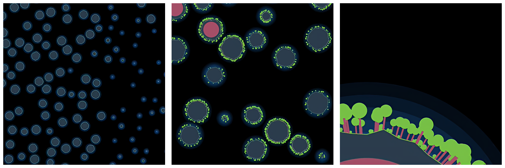
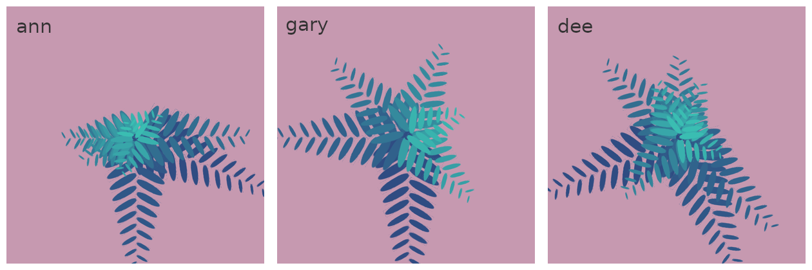
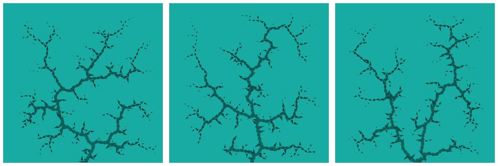
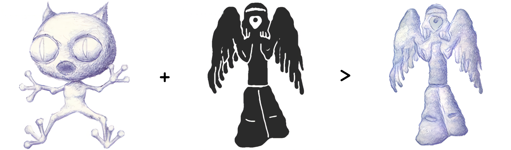
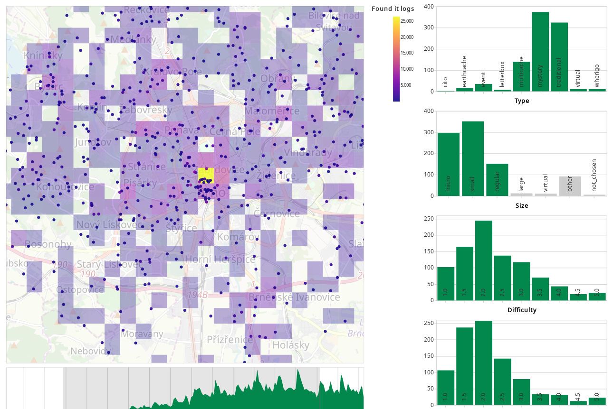

I will write a generative design script
I will help you use the power of computers to create procedurally generated art. I won’t provide you with a single masterpiece, I cannot do that, instead when talking about generative design you always get a (potentially infinite) collection of related artworks produced by computer.
This article lists different use-cases and concepts of generative/procedural design. It also includes a few adjacent topics that are commonly used simultaneously. Each section also contains an example of my work in this category, so that you can better imagine what is possible.
Dee Gmiterko
Purpose of the Generative Design
Procedural design often tackles a combination of all three mentioned purposes. For example: A live visualization that takes in current weather conditions and use it to control simulation of clouds in the background.
Art
First and foremost, it’s most commonly presented as art. So its purpose is to express emotions, tell stories.
Visualize
However, generative art can be utilized also for other means. For example to visually represent the significance of data to the viewer. As visual content is processed much faster and easier than text or a spreadsheet full of data it’s advantageous to let a computer generate visual representations for them.
Simulate
Another related field is simulation and modeling. Its aim is to copy physical properties and visually understand complex systems by building their approximations - models.
Media used by Generative Design
Image and video
The most commonly used media in generative design are without a doubt images and video.
Block chain (2016)
</> Browse source codeTo show this output format I have choosen a very simple animation generated by a computer.
3D objects
Rendering tools became very powerful over the years. And in combination with generative design they can produce visually appealing and complex scenes.
Golden cards (2021)
Here, I made a collection of procedurally generated 3D models. I used a modeling software Blender and a script which builds the scene and then renders it. Each card here represents a topic that people talked about at a given day.

Games and virtual worlds
The most well known example of this approach is Minecraft. I can provide you with a procedurally generated world for your game. Or it can be used as a content to fill the background of your scenes. For example an generated cityscape.
Infinite procedural worlds (2015)
</> Browse source codeThe next example is in an old procedurally generated world of mine. It's built using a recursive of galaxies, planets, their terrains, and trees. User interface allows you to view the world on any zoom level and it's infinite in both x and y directions.

Generative Design concepts
Parameterization
I htink that the most important concept of generative design is parameterization. Script can use input parameters (for example width of the image, numbef or fish) and using them calculate location, shape, color, and movement of objects on the screen. You should be then able to tweak parameters to produce many differnet art pieces.
“Ponyo” animation (2016)
</> Browse source codeIf you watch this example closely you can notice that it's only using a single math function. sin(x). But when it's applied to basic properties of objects like position, rotation, and color it can still produce complex looking results.

Repeatability
I think the second most important concept of procedural design is repeatability. Idea of this content is really straightforward: Given a script (source code) and inputs users can always generate the same artwork. So this means you do not have to store generated media as it can be always reproduced. Or you can still choose to produce new artworks by altering its code or inputs.
Fern profile picture (2022)
</> Browse source codeI decided to demonstrate this concept on this simple “profile picture generator”. Given a name it will produce an image composed of fern leaves to represent the name.

Randomness
A very important concept for generative art is randomness. It can be used to alter input parameters of the generative process to produce a varied collection of artworks or assets.
You can use this concept to produce many unique but visually similar items. For example a lot of different rocks for a game, a collection of card decks where each package is slightly different, or now-so-popular NFT collections.
A tri-tree (2016)
</> Browse source codeIn this example I am using a stream of random numbers to place new leaves forming tree-like structures in a process.

Transformation
Another approach to procedural art is not to fully generate the media by yourself but instead take some existing content as an input and only transform it in a way. You can take things like images, videos, text, numbers, datasets and use a deterministic script to produce new content. For example by doing geometric transformations, color modifications, abstraction, or simplification.
Album mood (2018)
</> Browse source codeTo demonstrate this concept I choose a project that turns a series of photos (for example a gallery or video) into an abstract image containing a color palette that best represents the original images. This example uses statistical methods and other math magic to extract the relevant information.
Artificial intelligence
A very current technique used to solve many problems across the board is artificial intelligence. And of course, it can be applied also to generative art.
An artificial intelligence is quite successfully used to solve specific problems like:
- generating a collection of similar objects (e.g anime characters) given a set of examples
- generating images from a text description
- image restoration, upscaling
Style transfer (2017)
For example here I used a neural network to color in a picture for me given a silhouette and a style to match.

Visualization
A specific case of transformations are data visualizations. We can treat real world data as an input into a procedural design script. But in this case its purpose isn't an artistic expression, but a representation of information.
Geocache density (2019)
</> Browse source codeFor example here I used a heatmap view, and various plots to describe distribution of caches and their visits for a game played in the real world, Geocaching. I am sure you have encountered many visualizations in your life, so I don’t have to explain their capabilities.

Simulation
And the last concept used in a generative design I can think of is simulation. This can include physics simulation, flow of fluids, or discrete agents interacting with each other.
Sheep herding simulation (2017)
I have prepared this simulation using very few simple rules which jointly produce a complex behavior. In this case we have three basic rules:
- sheep alter their heading to match other sheep nearby
- sheep runs away from a dog
- dog tries to preserve a fixed distance from closest sheep
And their interaction forces sheep to create a herd every single time even though it is not directly specified anywhere.